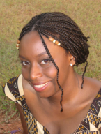
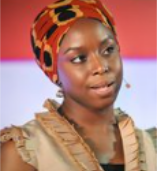
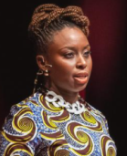
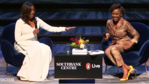

The Blood of the Nigerian Feminist
If you ask at anyone in France to cite a famous feminist, they will surely answer Michelle Obama (30%) or Malala Yousafzai (19%) but there is an other famous woman who is all over the world but still pretty unknown in France…
Her Life
Chimamanda Ngozi Adichie is recognized as a global icon of feminism and a famous Author with innovative thinking. She has written many award-winning novels about life in Nigeria and the United States, translated into more than 30 languages, but it was her thinking about gender equality that drew the audience’s attention. Adichie grew up on the campus of a university in Nigeria, while her father was a professor of Statistics and her mother a university administrator. Education was an important value in her family, and as a gifted student Adichie found herself in a scientific stream. It was not until she arrived in the United States to continue her studies that she turned to the humanities. As she recounted in subsequent interviews, the feminists of the 1st and 2nd Waves never really attracted her. It wasn’t his story. She did not come to feminism through theory and books; she became a feminists growing up in Nigeria and seeing how women were considered and treated as second-class citizens, which was "a senseless injustice".
T.E.D Conference
Her T.E.D Conference in 2012 is both interesting and funny, she manages to make us realize by making us laugh, for example, she tells us an anecdote : she was with her best friends, they were parking when a man came to help them maneuver, Chimamanda to thank him gave her money that she had earned herself as a writer and the man replied to her friend: "Thank you sir". His friend a little shocked didn't understand what had happened. In fact the man thanked him thinking that it was his money that he had given to his wife and not the money of the woman. It show how much a woman is seen as an Object in Nigeria. After this TED she will write a book called "We are all feminists", propelled Adichie to the rank of internationa feminist icons. Beyoncé has notoriously sampled his intervention in his Single "Flawless". In 2017, Maria Grazia CHIURI, the artistic director of the luxury brand Dior, used the original title of the book "We should all be Feministes " as a slogan for her T-campaign shirts, thus bringing this popular feminism into the world of fashion.
Ted 2014
Ted 2017
Her Attack
In 2018, Adichie revealed her experience of sexual harassment as a 17-year-old apprentice writer assaulted by a major media figure. A central speaker at the Stockholm Forum for Gender Equality, she has expressed her support for the #METOO movement and continues to actively work and use her writing skills to combat all the negative connotations associated with being "Feminist".
